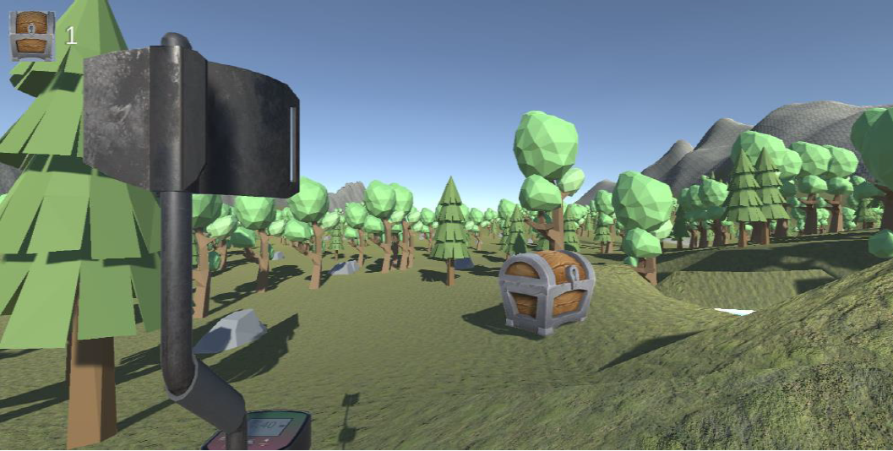

What is
TreasureHunter

Project Task
In order to teach the skills of creating virtual environments, an assignment was given in the course. It states that a 3D interaction application should be created that addresses the topics addressed in the lecture. Special emphasis should be placed on effectiveness, innovativeness, creativity, technical complexity and code. The task is held very open, as there are no hard limits as to what kind of virtual environment should be created. The project was supported by mid-term reports in the form of events. In these additional events, various questions could be asked and feedback was given on the achievements so far. At the end of the project, a presentation and a demo had to be shown.
Implementation of the game
The concept idea gave us the game "Treasure Hunter". In this game, the user has to move a player through a game world by mobile phone. The aim of the game is to search for treasures distributed on the map. During the search, the user can survey and explore the environment. When the player is in a certain distance of a treasure, the mobile phone starts to vibrate and the closer it gets, the faster the mobile device vibrates. As soon as the user moves over a treasure, the treasure is collected and the user receives a point. The game was developed using the runtime and development environment Unity. To use the mobile phone as a controller, the plugin AirConsole was used. The smartphone was chosen as the input device because the target group should have a low barrier. The AirConsole plugin makes it easy to connect the mobile phone to Unity. Besides this advantage, several functions are also added. In this project, the gyroscope and the acceleration sensor were read out by AirConsole and sent to Unity. In addition, the plugin AirConsole was able to perform vibration on the mobile device. By tilting the smartphone, the user can move the player. He can move it forwards, backwards, left and right. Due to the limitation of the freedom lines, the rotation of the player had to be implemented by the implementation of a button. Two buttons were implemented, one for turning and one for calibrating. In the design, the button for turning was made larger because it is an important part of the game and the calibration only needs to be used at the beginning and in the best case once. If the user wants the player to turn, he or she must hold down the rotation button and then move the smartphone in the direction in which the player should turn. Another function that has been implemented is jumping. When the user shakes the smartphone, the player jumps. This allows different obstacles to be overcome and enables another functionality in the game.